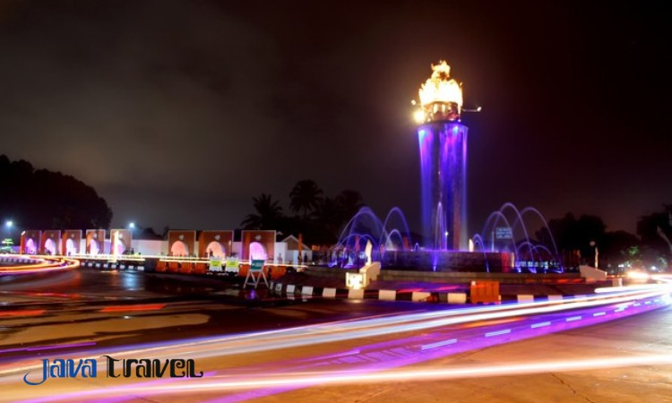
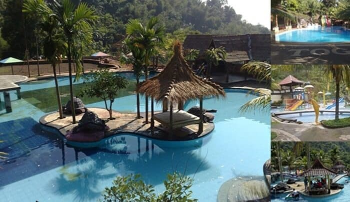

Sejarah

Pada mulanya Kabupaten Sumedang adalah sebuah kerajaan di bawah kekuasaan Raja Galuh. Yang didirikan oleh Prabu Geusan Ulun Aji Putih atas perintah Prabu Suryadewata sebelum Keraton Galuh dipindahkan ke Pakuan Pajajaran, Bogor. Seiring
dengan perubahan zaman dan keoemimpinan, nama Sumedang mengalami beberapa perubahan, Yang pertama, yaitu Kerajaan Tembong Agung ( Tembong artinya nampak dan Agung artinya luhur) dipimpin oleh Prabu Guru Aji Putih pada abad ke-12. Kemudian
pada masa zaman Prabu Tajimalelas, diganti menjadi Himbar Buana yang berarti menerangi alam, dan kemudian diganti lagi menjadi Sumedang Larang (Sumedang berasal dari kata Insun Medal/Insun Medangan yang berarti aku dilahirkan; aku
menerangi dan Larang berarti sesuatu yang tidak ada tandingannya).
Sumber : https://www.kompasiana.com/
Makanan Khas
Bermula dari kreativitas yang dimiliki oleh imigran Cina, Ong Kino dan istrinya yang menjadi perintis untuk memproduksi tahu di Sumedang yang awalnya dibuat dari kedelai lurik yang mirip telur puyuh. Tahun demi tahun, Ong Kino beserta
istrinya terus menggeluti usaha mereka hingga sekitar tahun 1917, dan anak tunggal mereka bernama Ong Bung Keng untuk melanjutkannya. Ong Bung Keng kemudian melanjutkan usaha keduaorangtuanya yang memilih kembali ke tanah kelahiran
mereka di Hokkian, Republik Rakyat Tiongkok. Melalui generasi Ong Bung Keng yang terus melanjutkan usaha yang diwariskan dari kedua orang tuanya hingga akhir hayatnya di usia 92 tahun. Di balik kemasyhuran tahu Sumedang ada pula kisah
seperti yang diceritakan cucu dari Ong Kino, Suryadi. Sekitar tahun 1928, konon suatu hari tempat usaha sang kakek buyutnya, Ong Bung Keng, didatangi oleh Bupati Sumedang, Pangeran Soeria Atmadja yang kebetulan tengah melintas dengan
menggunakan dokar dalam perjalanan menuju Situraja, Sumedang. Kebetulan, sang pangeran melihat seorang kakek sedang menggoreng sesuatu. Pangeran Soeria Atmadja langsung turun begitu melihat bentuk makanan yang amat unik serta baunya
yang harum.[3] Sang bupati, Pangeran Soeria Atmadja kemudian bertanya kepada sang kakek, "Maneh keur ngagoreng naon? (Kamu sedang menggoreng apa?)". Sang kakek berusaha menjawab sebisanya dan menjelaskan bahwa makanan yang ia goreng
berasal dari tahu. Karena penasaran, sang bupati langsung mencicip satu. Setelah mencicipi, bupati secara spontan berkata dengan wajah puas, "Enak benar masakan ini! Coba kalau kamu jual, pasti laris!". Tak lama setelah kejadian ini,
tahu digemari oleh penduduk Sumedang dan kemudian sampai ke seluruh Indonesia.
Sumber:
https://id.wikipedia.org/wiki/Tahu_sumedang
Wisata
Di Sumedang ada banyak tempat-tempat wisata, tapi mimin cuma mau memperkenalkan beberapa saja ya.
Puncak Damar, Jati Gede
Menyuguhkan pesona landskap waduk dengan pemandangan nan eksotis, menghabiskan waktu di Puncak Damar Baros Jatigede bisa menberikan pengalaman liburan yang berbeda. Tempat wisata di Sumedang ini menawarkan keindahan waduk Jatigede
yang di dalamnya terdapat perbukitan nan mempesona jika dilihat dari kejauhan. Sejauh pandangan hanya pesona alam yang tersaji dengan begitu indahnya. Tak ayal jika destinasi ini jadi buruan para pecinta fotografi. Selain itu ada
beberapa aktivitas menarik yang bisa Anda lakukan di tempat ini, seperti camping atau pun outbond. Ditambah lagi dengan fasilitas lain yang cukup memadai, misalnya gazebo hingga area bermain Anak, membuat siapapun akan betah menghabiskan
waktu santainya di tempat menarik yang satu ini.
Kampung Toga

Berjarak kurang lebih 2 km dari Sumedang kota, Kampung Wisata Toga bisa jadi destinasi seru untuk berlibur di akhir pekan. Seperti namanya Kampung Wisata Toga atau tanaman obat keluarga, di sini Anda akan diajak mengenal berbagai macam
tanaman obat dengan cara yang lebih fun dan seru. Sebab banyak kegiatan menarik yang bisa dilakukan disini, mulai dari berenang, memancing, berkeliling dengan naik sepeda, main paint ball, hiking, mencoba arung jeram hingga mencoba
gantole dan masih banyak hal seru menarik lainnya. Tempat wisata di Sumedang ini juga menyediakan villa jika Anda ingin menghabiskan waktu menginap di tempat yang menarik ini.